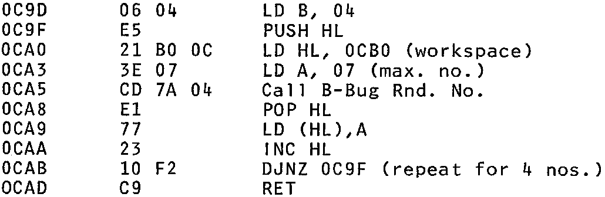

INMC 80 News |
June/July/August 1980 · Issue 1 |
| Page 8 of 48 |
|---|
interest in Nascoms in Bradford College where I teach. Hopefully we will equip an MPU workshop with Nascoms (if cuts permit) for teaching MPU applications.
Can you recommend a book on interfacing MPU’s to external equipment ? Something on the lines of a tutor text would be ideal.
Yours faithfully,
P. Nurse.
Bradford.
Ed: We put several articles on the PIO in issue 6, but a short article describing the software and hardware needed to control a row of LED’s should be easy to find. Please will an INMC member send one in, and can anyone help on suggestions for books describing interfacing that are simple to understand ?
Dear INMC,
I’m sure a lot of you and other Nascom owners have tried the Mastermind game by D. Ritchie, which you have featured in the mag. This is one of the best games around, the Nascom usually beats me, but the only let down in the program is the poor random number selection for the ‘computers guess’, which after a few goes in predictable, 0123, 5567, 3455, typical of its guess’s. I feel this is due to the simple use of ‘ED 5F’, location 0C9F. I have worked out a simple random number generator which works a lot better, using the rnd. no. generator of ‘B-Bug’. (What’s B-Bug ? –Ed.)
The modifications are:
Have a go, and I think you’ll find it’s better.
Yours faithfully,
G. Benson
Lichfield.
| Page 8 of 48 |
|---|